The slide of the lecture is on the left, the same figure on the right, computed in the browser from the same data. The ▶ button moves the parameter step by step.
Realised Variance · Microstructure Noise · Jumps · Stylised Facts of Realised Volatility · Forecasting: HAR vs GARCH · Rough Volatility · Case Studies: Machine Learning and Partial Variances
Realised Variance
One Day, 78 Returns: 7 April 2025
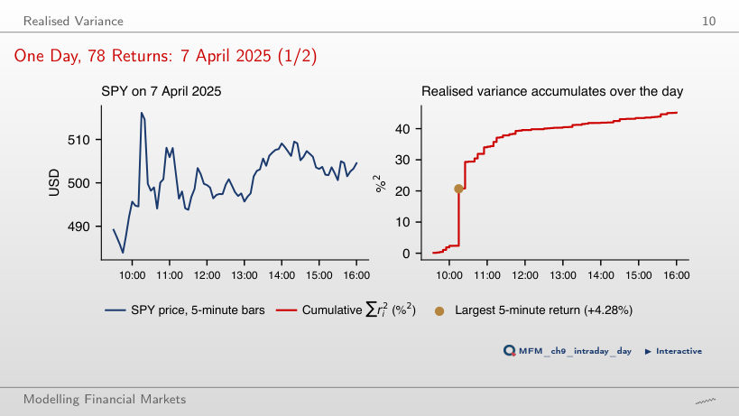
Answer
About 100.0 %². That interval's contribution quadruples: 45.1 − 18.3 + 4 × 18.3 = 100.0 %². The value 63.4 %² doubles the variance contribution rather than the return; 180.4 %² assumes that all returns double. In the data, the +4.28% return of the interval ending at 10:15 contributes 41% of the day's RV.
Daily Realised Volatility: SPY and Bitcoin
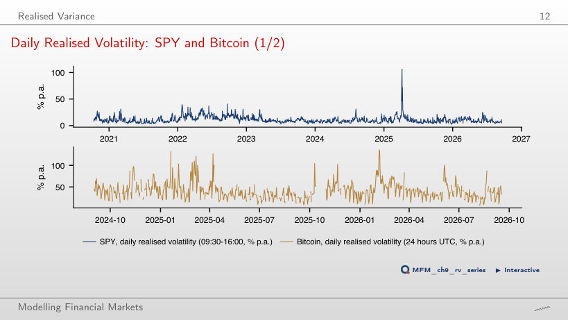
Answer
To 11.9%: 20 days, i.e. 1.3% of the 1,489, raise the volatility computed from mean RV by 1.0 percentage point. The mean of the variances is sensitive to a few extreme days; the median is not. For Bitcoin, leaving out its 20 most volatile days lowers the value from 45.1% to 41.6%.
Where Is the Risk: Day or Night?
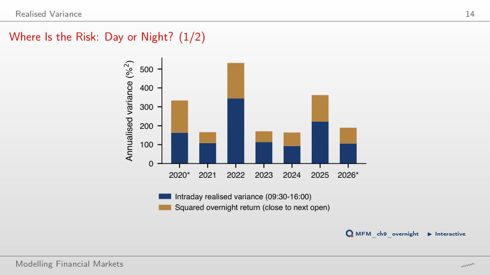
Answer
About 16.4%: volatility is multiplied by √1.62, so 12.9% × √1.62 ≈ 16.4% (the readout shows 16.5% because it starts from the unrounded 12.93%). The value 20.9% applies the variance multiplier directly to volatility; 10.1% is the overnight component's volatility. Overnight returns bring 38% of the SPY daily variance; scaling matches mean variances, it does not reconstruct each day's overnight component.
Microstructure Noise
The Signature Plot on Real Data
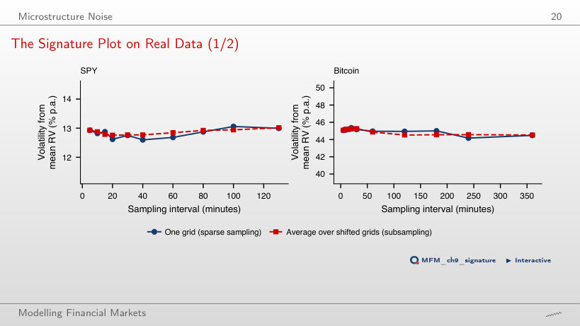
Answer
About ω = 0.027%. Solving 252 × (mean RV + 2 × 78 × ω²) = 14² gives ω ≈ 0.02708%; on the slider, 0.027% gives 13.99% and 0.028% gives 14.07%. The value 0.019% incorrectly uses 4nω²; 0.038% uses nω². The actual signature plot stays approximately flat, between 12.6% and 13.1%: compatible with a much smaller noise bias at 5 minutes, without ruling out noise.
Jumps
Jump Days: SPY and Bitcoin
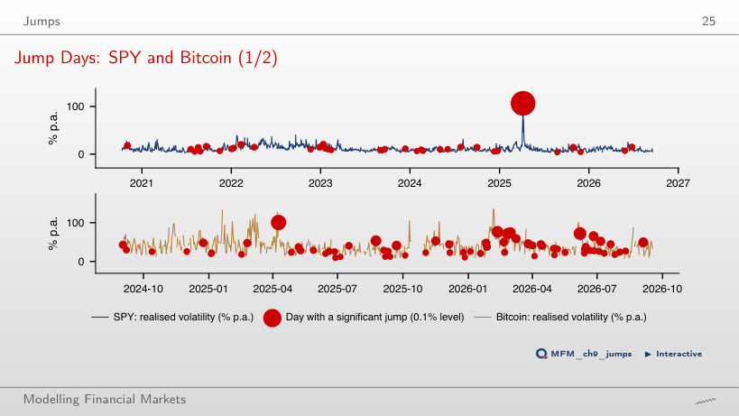
Answer
About 74: the expected count is 1,489 × 0.05 = 74.45, not a guaranteed sample count; independence across days is unnecessary for this expectation. In the data, the test without the intraday-periodicity adjustment gives 236 rejections at 5%, and Benjamini–Hochberg (FDR at 5%) retains 43. After the periodicity adjustment, Benjamini–Hochberg retains 17.
Stylised Facts of Realised Volatility
Distributions: log RV and Standardised Returns
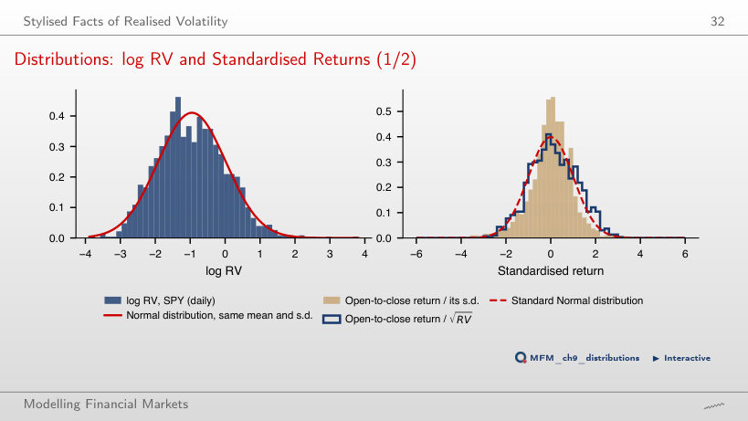
Answer
About 20.0. At λ = 1, the transformation is RV − 1, which preserves RV's skewness (kurtosis 550). The value 3.9 corresponds to λ = 0.5 (the square root); 0.29 corresponds to the logarithm. Log RV's moments being close to those of the Normal distribution (0 and 3) does not establish conditional normality.
Persistence of Realised Volatility
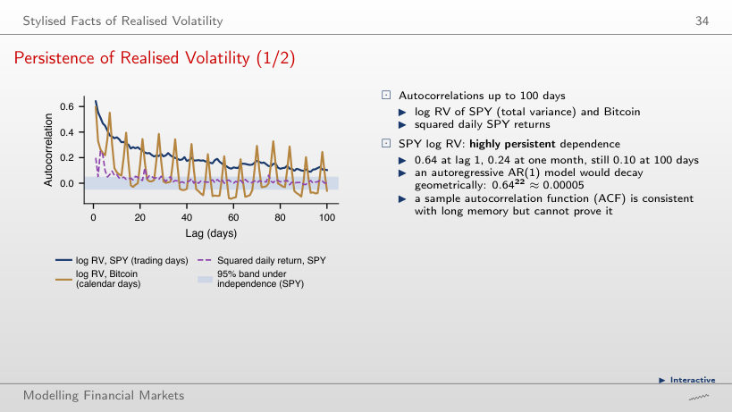
Answer
For an AR(1), lag-k autocorrelation is ρᵏ: 0.64²² ≈ 0.000054. The value 0.24 is the empirical lag-22 autocorrelation, not the AR(1) implication; dividing by 22 uses the wrong rule. The fitted log-HAR, seen as an AR(22), gives 0.63 at lag 1 and 0.24 at lag 22, as the data do, but understates lag-100 autocorrelation: about 0.02 against 0.10.
Implied vs Realised Volatility
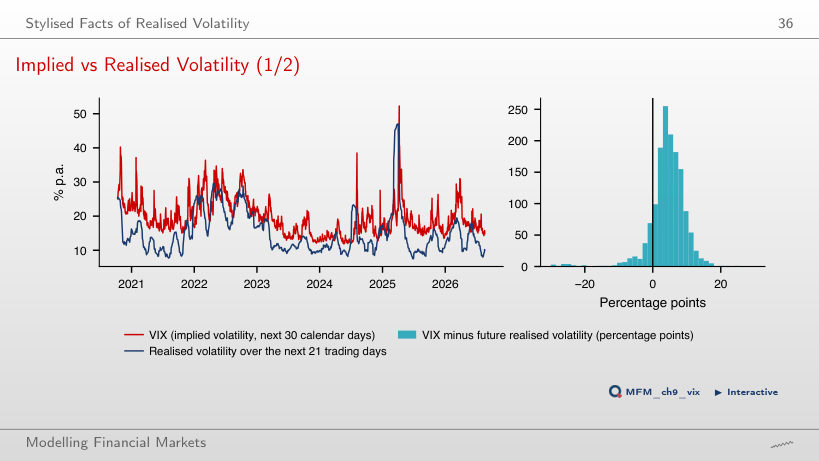
Answer
No. A few large negative differences can outweigh many small positive ones. In this sample of 1,468 days, the mean difference is indeed positive, 4.36 percentage points (19.52% against 15.15%), but this follows from the sizes of the differences, not just from their signs. It is an ex-post volatility gap.
Forecasting: HAR vs GARCH
Forecasts over Time
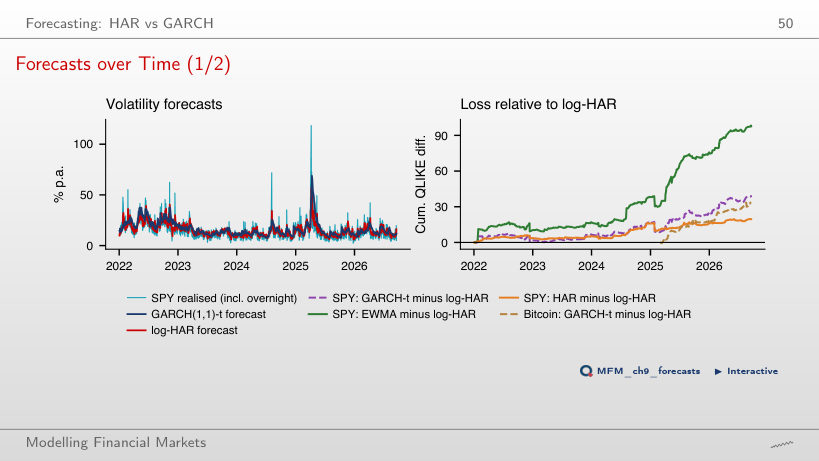
Answer
By about 11.4%: 1 − 0.362/0.409 ≈ 0.114. The value 12.9% uses log-HAR in the denominator; 9.6% is the reduction over the full sample, from 2022 (0.310 against 0.343). For evaluation from 2024, DM t = −2.26, with the difference defined as log-HAR loss minus GARCH loss; the conclusion concerns SPY, this period and the QLIKE loss.
Rough Volatility
Scaling of Log Volatility Increments
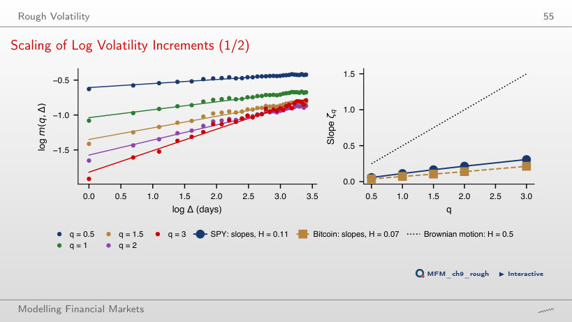
Answer
It falls, from 0.106 (lags 1–30) to 0.089. This is opposite to the direction suggested by the simplified model m(2, Δ) = cΔ^(2H) + k, with i.i.d. error independent of latent log volatility. The result does not support this simple mechanism as a sufficient explanation; it neither rules out all measurement error nor is, by itself, a formal test. For Bitcoin, Ĥ goes from 0.071 to 0.068.
Case Studies: Machine Learning and Partial Variances
Case Study: Gains by Horizon
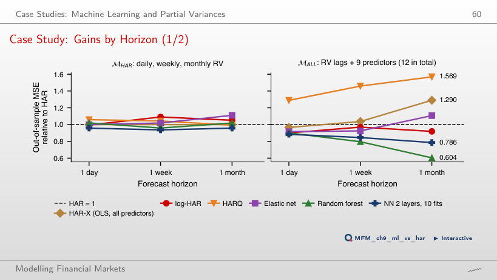
Answer
By 39.6%: 100 × (1 − 0.604). The value 60.4% is the remaining loss, not the reduction; 65.6% measures how much higher HAR's MSE is relative to random forest. Bagging follows (0.621); HAR-X, i.e. OLS with the same predictors, has 1.290 and HARQ 1.569. The ranking describes these procedures on this test set; by itself, it does not identify the causes of the differences.
Case Study: Loss as a Function of the Threshold, SPY and Bitcoin
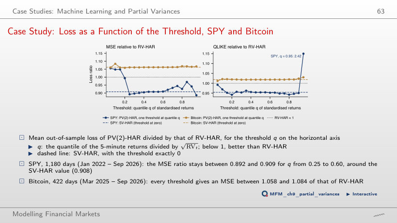
Answer
It rises to 1.240: on the remaining days, SV-HAR has about 24% higher MSE. The 10 excluded days contribute 89% of RV-HAR's total squared error. The QLIKE ratio stays below 1, at 0.937 (against 0.954 over the whole sample), but this is a sample finding, not a guarantee that QLIKE is immune to extreme observations.
SPY: 5-minute bars of the regular US session (09:30–16:00, New York time), October 2020 – September 2026, and adjusted daily returns; Bitcoin: 5-minute bars on complete UTC days, September 2024 – September 2026; the VIX index. EODHD prices. First case study: Tables 2–7 of Christensen, Siggaard and Veliyev (2023); second case study: the SPY and Bitcoin 5-minute bars of the course.